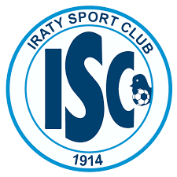

Irati é uma cidade reconhecida por sua aptidão no esporte. No ambito escolar e Jogos da juventude, os times estão sempre honrando sua cidade e tranzendo medalhas para a casa.
Futebol, volei, basquete, tenis de mesa e atletismo são os mais fortes.
Iraty Esporte Clube
Fundado em 21 de abril de 1914, por um grupo de esportistas liderados por Antônio Xavier da Silveira, o Iraty Sport Club é um dos Clubes mais antigos do Paraná. Fez seu primeiro jogo no mesmo ano, vencendo o Imbituvense por 3x0. O time, que na década de 90 ficou conhecido como Azulão, devido à cor do seu uniforme.
No dia 1 de maio de 2002, conquistou o seu primeiro título de Campeão Paranaense, entre os oito clubes que disputaram o certame sem a participação dos clubes de Curitiba.
Com uma base formada em casa, mais os jogadores experientes trazidos por seu presidente, Sérgio Malucelli, o elenco foi Campeão Estadual com uma rodada de antecedência, levando para a cidade a hegemonia do futebol. Seu estádio, Coronel Emílio Gomes, foi totalmente reformado para competições de porte maior, como a Copa do Brasil de 2003, vaga conquistada justamente por ser Campeão Estadual.
